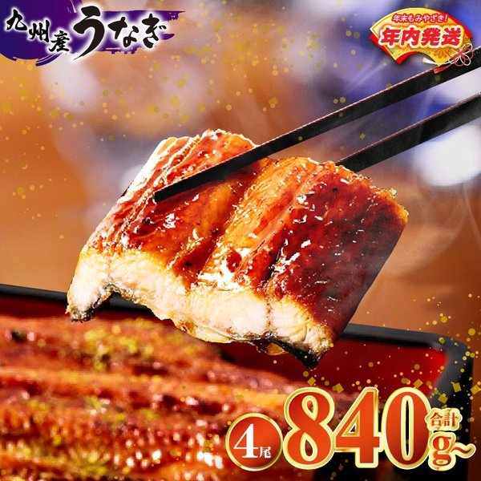
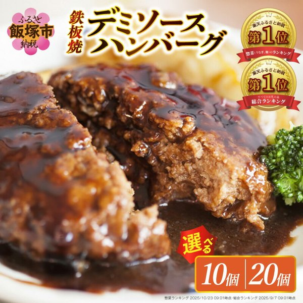
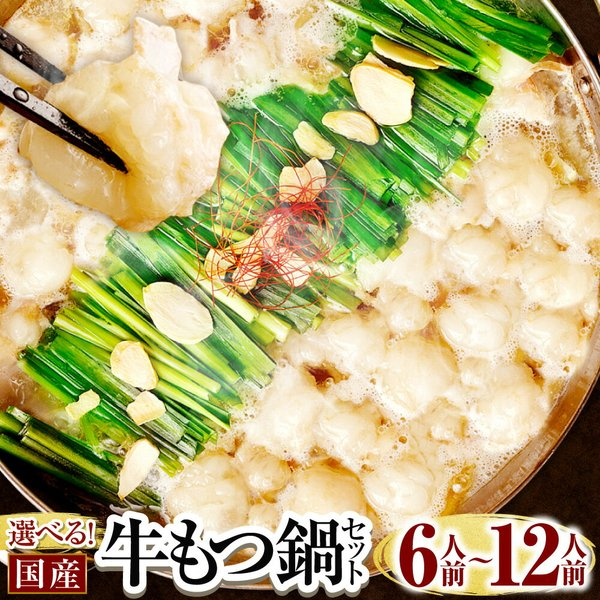
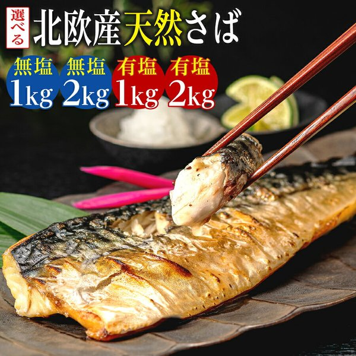
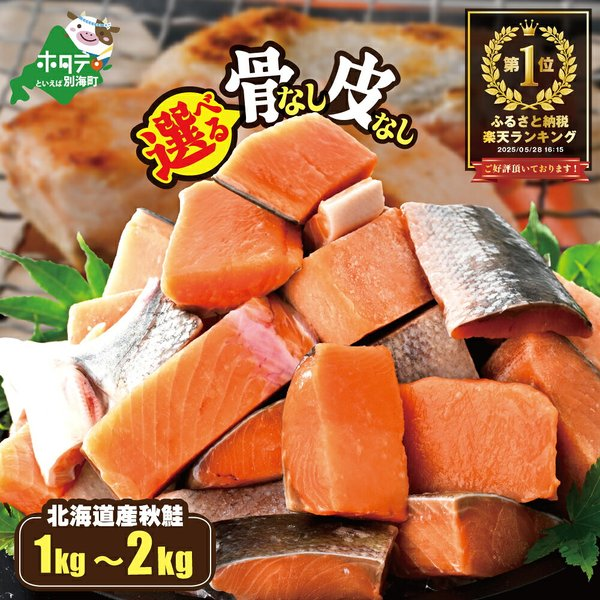
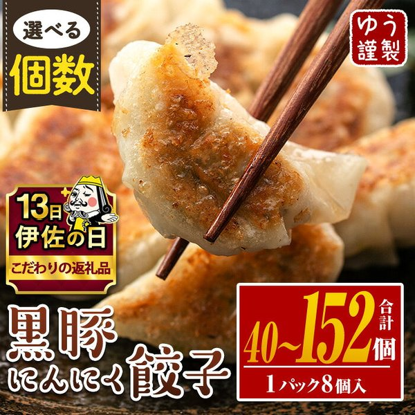
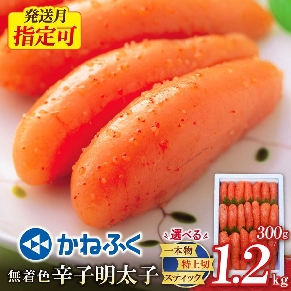
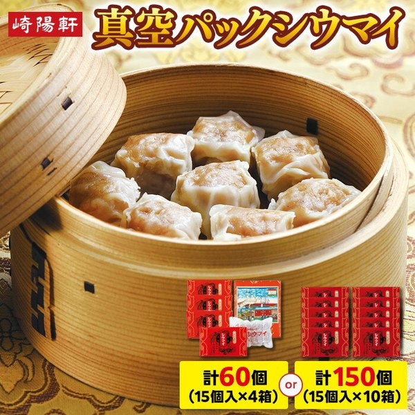
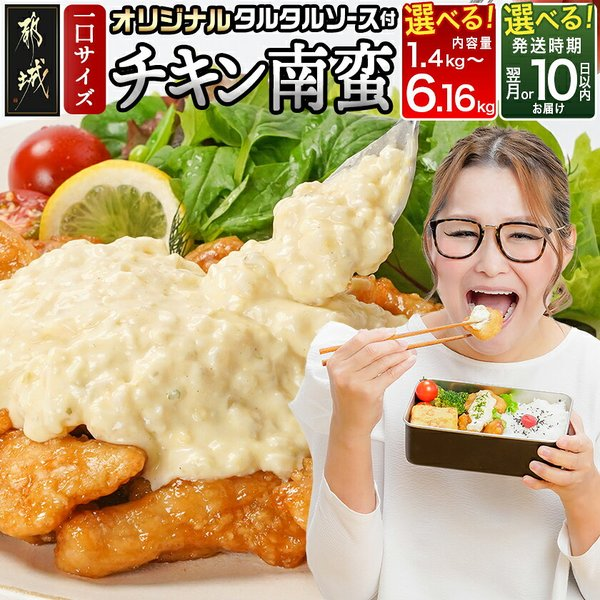
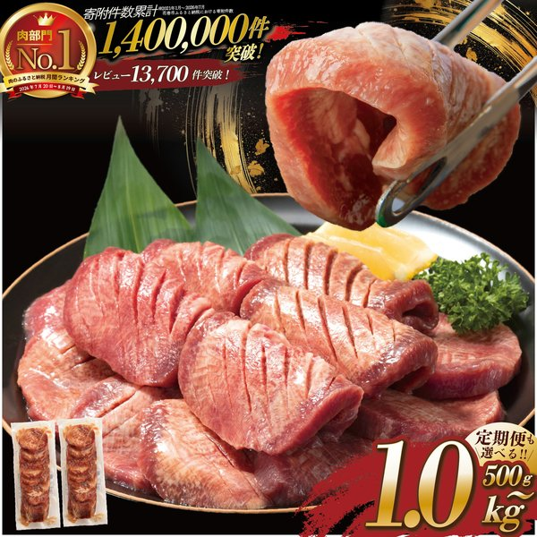

【2026年・ふるさと納税】冷凍庫に常備したい絶品おかず＆惣菜の返礼品10選｜うなぎ蒲焼・デミグラスハンバーグ・もつ鍋・骨取りさばと鮭・餃子・明太子・崎陽軒シウマイ・チキン南蛮・牛タンを寄附額で比較
年末は、冷凍庫に「もう一品」があるかどうかで夕食の負担が変わります。帰宅が遅くなった日、来客があった日、子どもが食べ盛りの日。温めるだけで一皿出せるおかずがあると、献立を考える時間が短くなります。
選ぶ軸は3つです。「まず主菜になるか」。うなぎ・ハンバーグ・牛タンのように、それだけで食卓の中心になる返礼品を優先します。「次に小分けかどうか」。1個ずつ、1パックずつ分かれていると、使う分だけ解凍できて無駄が出ません。「最後に日持ちと発送時期」。冷凍で届くものは長く持ちますが、発送が翌年になる返礼品もあるので、年内に食べたいものは時期を確認しておきます。なお、レビュー件数が50件に満たない商品は記事内に実数を明記しています。
本記事では、楽天市場のふるさと納税で人気・高評価の冷凍おかず・惣菜返礼品10選を、寄附額とレビュー評価つきで写真付き紹介します。
- おすすめ10選 スペック・特徴比較表
- BEST 1｜九州産うなぎ蒲焼 4尾・6尾から選べる返礼品
- BEST 2｜鉄板焼ハンバーグ デミソース 10個・20個から選べる返礼品
- BEST 3｜国産牛もつ鍋セット 6人前〜12人前（醤油・みそ）
- BEST 4｜訳あり 骨取り 無塩さば 有塩さば 約1kg・約2kg
- BEST 5｜北海道産 カット秋鮭 約1kg〜2kg 天然・無塩
- BEST 6｜黒豚にんにく餃子 40個・80個・152個から選べる返礼品
- BEST 7｜無着色 辛子明太子 300g〜1.2kg 選べる容量
- BEST 8｜崎陽軒 真空パックシウマイ 60個・150個
- BEST 9｜宮崎県産鶏チキン南蛮 1.4kg〜6.16kg 選べる内容量
- BEST 10｜厚切り牛タン 塩味 500g〜5kg 選べる内容量
- 【読者負担0円】買わなくても得する無料サービス
- まとめ：冷凍おかず・惣菜の返礼品10選の選び方
| 順位 | 商品名 | ブランド | 最大の特徴・おすすめ理由 | 総合評価 |
|---|---|---|---|---|
| BEST 1 | 九州産うなぎ蒲焼 4尾・6尾から選べる返礼品 | 宮崎県宮崎市 | 湯せんかレンジで温めるだけで食べられる | 4.80 |
| BEST 2 | 鉄板焼ハンバーグ デミソース 10個・20個から選べる返礼品 | 福岡県飯塚市 | 袋のまま湯せんすればソースまで温まる | 4.70 |
| BEST 3 | 国産牛もつ鍋セット 6人前〜12人前（醤油・みそ） | 福岡県遠賀町 | 下処理済みのもつで臭みが少ない | 4.55 |
| BEST 4 | 訳あり 骨取り 無塩さば 有塩さば 約1kg・約2kg | 千葉県銚子市 | 骨を取り除いた切身なのでそのまま焼ける | 4.79 |
| BEST 5 | 北海道産 カット秋鮭 約1kg〜2kg 天然・無塩 | 北海道別海町 | 無塩なので味付けを自由に決められる | 4.52 |
| BEST 6 | 黒豚にんにく餃子 40個・80個・152個から選べる返礼品 | 鹿児島県伊佐市 | 黒豚の餡で食べごたえがある | 4.72 |
| BEST 7 | 無着色 辛子明太子 300g〜1.2kg 選べる容量 | かねふく（福岡県筑紫野市） | 無着色で色が自然 | 4.79 |
| BEST 8 | 崎陽軒 真空パックシウマイ 60個・150個 | 崎陽軒（神奈川県横浜市） | 常温保存できるので冷凍庫が不要 | 4.71 |
| BEST 9 | 宮崎県産鶏チキン南蛮 1.4kg〜6.16kg 選べる内容量 | 宮崎県都城市 | 甘酢とタルタルソースが別添で付く | 4.68 |
| BEST 10 | 厚切り牛タン 塩味 500g〜5kg 選べる内容量 | 岩手県花巻市 | 厚さ10mmの厚切り | 4.49 |
九州産うなぎ蒲焼 4尾・6尾から選べる返礼品

宮崎市の返礼品は、九州産のうなぎを蒲焼きにして冷凍で届ける定番です。届いたら袋のまま湯せんか電子レンジで温めるだけで、タレの香りが立った蒲焼きが食卓に出せます。4尾と6尾から内容量を選べ、発送時期も指定できるので、年末の集まりに合わせて届けてもらえます。うなぎは冷凍のまま保存できるため、急な来客のときのおかずにも困りません。楽天市場での寄附額は約24,000円（2026年11月時点）。
- 湯せんかレンジで温めるだけで食べられる
- 内容量と発送時期を選べる
- 冷凍で常備できるので急な来客にも出せる
- 1尾あたりの大きさにばらつきがあり、6尾を一度に温めるとフライパンでは収まらない
鉄板焼ハンバーグ デミソース 10個・20個から選べる返礼品

飯塚市の返礼品は、鉄板で焼いたハンバーグをデミソースと一緒に冷凍したセットです。袋のまま湯せんすると、ソースまで温まってそのまま皿に盛れます。10個入りと20個入りがあり、1個ずつ小分けなので食べる分だけ取り出せます。付け合わせを足せば一食分になるので、忙しい日のメインおかずとして重宝します。楽天市場での寄附額は約14,000円（2026年11月時点）。
- 袋のまま湯せんすればソースまで温まる
- 1個ずつ小分けで使う分だけ取り出せる
- 10個・20個から選べる
- ソースが濃いめなので、副菜はあっさりしたものを合わせたい
国産牛もつ鍋セット 6人前〜12人前（醤油・みそ）

遠賀町の返礼品は、国産牛のもつとスープがセットになったもつ鍋です。6人前から12人前まで選べ、味は醤油とみその2種類。鍋に野菜を足して煮るだけで、博多の味が家で楽しめます。もつは下処理済みで臭みが少なく、スープは濃縮タイプなので好みで薄められます。忘年会や家族の鍋の日に使いやすい返礼品です。楽天市場での寄附額は約8,000円（2026年11月時点）。
- 下処理済みのもつで臭みが少ない
- 醤油・みその2種類から選べる
- 6人前から12人前まで人数に合わせられる
- スープが濃いので、野菜を多めに入れるか水で薄めて調整する
訳あり 骨取り 無塩さば 有塩さば 約1kg・約2kg

銚子市の返礼品は、骨を取り除いたさばの切身を無塩と有塩の両方で入れたセットです。骨が抜いてあるので、子どもや高齢の家族にもそのまま出せます。1kgと2kgから選べ、切身は小分けで冷凍されているため、使う分だけ解凍できます。塩焼きにしても味噌煮にしても、夕食のおかずが1品すぐ埋まります。楽天市場での寄附額は約10,000円（2026年11月時点）。
- 骨を取り除いた切身なのでそのまま焼ける
- 無塩と有塩の2種類が入る
- 小分け冷凍で使う分だけ解凍できる
- 訳あり品なので切身の形や大きさがそろわず、盛り付けの見た目は家庭用
北海道産 カット秋鮭 約1kg〜2kg 天然・無塩

別海町の返礼品は、北海道産の天然秋鮭をカットして無塩のまま冷凍したものです。塩をしていないので、焼く前に塩をふる、バターでソテーする、ちゃんちゃん焼きにするなど、味付けを自分で決められます。内容量は約1kgから2kgまで選べ、切り身は不揃いですがその分だけ家庭用として使いやすいセットです。楽天市場での寄附額は約13,000円（2026年11月時点）。
- 無塩なので味付けを自由に決められる
- 天然の秋鮭を使用
- 内容量を約1kgから2kgで選べる
- 切身が不揃いで、皮の付き方も一枚ずつ異なる
黒豚にんにく餃子 40個・80個・152個から選べる返礼品

伊佐市の返礼品は、鹿児島の黒豚を使ったにんにく餃子です。1パック8個入りで、40個・80個・152個から選べます。にんにくが効いた餡で、焼いても水餃子にしても食べられます。付属の特製だれを使えば、家族で焼くだけで食卓が完成します。冷凍庫のストックとして、おかずにもおつまみにも使える返礼品です。楽天市場での寄附額は約6,000円（2026年11月時点）。
- 黒豚の餡で食べごたえがある
- 焼いても水餃子にしても使える
- 1パック8個の小分けで必要な分だけ焼ける
- にんにくの香りがしっかり残るので、翌日の予定がある日は量を調整する
無着色 辛子明太子 300g〜1.2kg 選べる容量

筑紫野市の返礼品は、かねふくの無着色辛子明太子です。300gから1.2kgまで容量を選べ、切れ子と一本物から選べます。無着色なので色が自然で、ごはんのお供にもパスタにも使えます。小分けのパックで届くため、食べる分だけ解凍すればよく、冷凍庫に常備しておくとなにかと便利です。楽天市場での寄附額は約6,000円（2026年11月時点）。
- 無着色で色が自然
- 300gから1.2kgまで容量を選べる
- 小分けパックで食べる分だけ解凍できる
- 解凍後は日持ちしないので、早めに食べきる必要がある
崎陽軒 真空パックシウマイ 60個・150個

横浜市の返礼品は、崎陽軒の真空パックシウマイです。60個入りと150個入りから選べ、常温で保存できるので冷凍庫を圧迫しません。袋のまま蒸すか電子レンジで温めれば、横浜の定番の味が家で食べられます。お弁当にも、来客のおもてなしにも使えるので、1箱あると安心です。楽天市場での寄附額は約10,000円（2026年11月時点）。
- 常温保存できるので冷凍庫が不要
- 60個・150個から選べる
- 袋のまま温められる
- レビューは65件と多くはなく、常温品なので開封後は早めに食べる
宮崎県産鶏チキン南蛮 1.4kg〜6.16kg 選べる内容量

都城市の返礼品は、宮崎県産の鶏を使ったチキン南蛮です。甘酢とタルタルソースが別添で付き、温めてかけるだけで完成します。内容量は1.4kgから6.16kgまで選べ、小分けパックなので必要な分だけ使えます。お弁当のおかずにも、夕食のメインにもなるボリュームです。楽天市場での寄附額は約10,000円（2026年11月時点）。
- 甘酢とタルタルソースが別添で付く
- 1.4kgから6.16kgまで選べる
- 小分けパックで必要な分だけ使える
- 揚げ物なので、温め直すと衣が柔らかくなる
厚切り牛タン 塩味 500g〜5kg 選べる内容量

花巻市の返礼品は、厚さ10mmの厚切り牛タンを塩味で味付けしたものです。500gから5kgまで内容量を選べ、小分けパックなので焼く分だけ取り出せます。厚切りなので噛みごたえがあり、焼肉や炭火焼きで食べると満足感があります。味付け済みなので、焼くだけで夕食のメインになります。楽天市場での寄附額は約8,000円（2026年11月時点）。
- 厚さ10mmの厚切り
- 塩味で味付け済みなので焼くだけ
- 500gから5kgまで選べる
- 発送が2027年2月以降になる回があり、年内に食べたい場合は発送時期の確認が必要
この記事の商品を買う前に、まずは無料で得する選択肢をチェック。どれも登録・利用は0円で、無料期間中に解約すれば料金はかかりません。読みたい雑誌がある人、ポイントを貯めたい人、アンケートなら気軽という人、それぞれに合うものを選べます。
初回31日無料・無料期間中に解約すれば0円 → 楽天ポイントモール｜登録無料で毎日ポイ活
買い物なしでもポイントが貯まる無料サービス → 楽天インサイト｜アンケートに答えてポイント
登録無料・すきま時間のアンケートで貯まる → 楽天カード｜年会費永年無料
新規発行・年会費ずっと0円 →
4つのサービスの違いと使い分けは「出費0円で得する！買わずにポイントが貯まる無料サービス厳選4選」でまとめています。
💡 まとめ：冷凍おかず・惣菜の返礼品10選の選び方
冷凍庫の常備菜は、主菜・魚・小腹の3つに分けて揃えると使いやすくなります。主菜は、宮崎市のうなぎ蒲焼、飯塚市の鉄板焼ハンバーグ、花巻市の厚切り牛タン、都城市のチキン南蛮。魚は、銚子市の骨取り無塩さばと別海町の北海道産秋鮭で、骨を気にせず焼くだけの一皿が作れます。小腹とおかずの足しには、伊佐市の黒豚にんにく餃子、かねふくの明太子、崎陽軒の真空パックシウマイ、遠賀町の国産牛もつ鍋。寄附額は6,000円台から24,000円まで幅があるので、年末の寄附上限と相談しながら、まずは1年でいちばん使う一品から試すと失敗しません。
楽天市場では「5と0のつく日」や「お買い物マラソン」などのキャンペーンに合わせて購入すると、ポイント還元が最大化してお得に手に入ります。ぜひチェックしてみてくださいね。